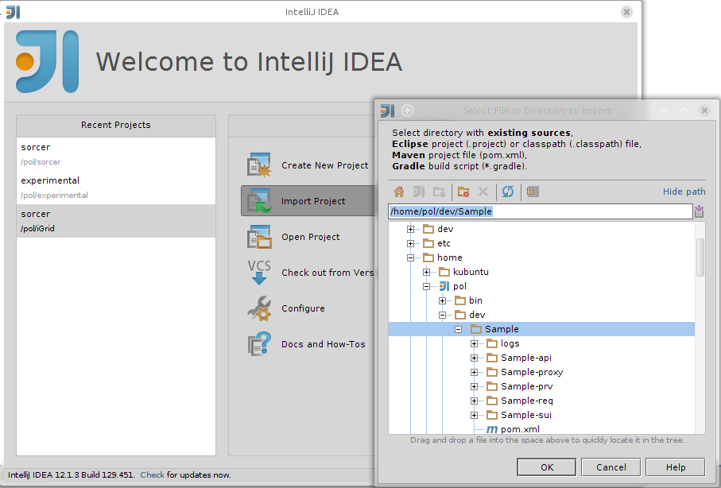

Creating new provider with Maven
Prerequisites
- Java 1.6
- Maven 3.0
- Sorcer distribution
- Eclipse with m2e (Maven) plugin (or other IDE that supports Maven)
- Maven settings.xml updated for Sorcer
Creating the project
- Go to directory which will be the parent of your new project
- Run
$SORCER_HOME/bin/create-provider
- Answer questions:
- groupId: This will usually be your organization’s reversed domain name, e.g. com.sorcersoft
- artifactId: The project name and the project directory name, e.g. myprovider
- package: The Java package for your provider classes, by default groupId is used
- serviceDescription: The description of your provider. The given description can be seen in the Sorcer Service Browser
- providerInterface: The Java interface name of your provider (service type) that will be exposed to requestors
- providerClass: The name of the class that will implement the provider interface
- serviceName: The name of your service
- Confirm properties configuration
Now you can accept or modify entered inputs, including the default ones. If everything is OK, press Y.
- Import your maven projects to your IDE (IntelliJ Idea or eclipse, for example). Below you can find information on how to import your project to IntelliJ idea
- You can remove the (service UI) <artifactId>-sui module unless you are going to create a graphical user interface attached to your provider. You can also remove the <artifactId>-proxy module unless you want to crate a custom provider proxy. Remember to delete the corresponding <module> entry in your provider pom.xml for any removed module from your provider project.
- To build your project in your the top-level directory of your project execute:
mvn install
Choosing your Integrated Development Environment (IDE)
For the development of Sorcer service providers you can choose any Java IDE that supports Apache Maven 3.x, however, we suggest that you use one of the following:
- Eclipse 4.x - please refer to this manual to see how to import a Sorcer Service Provider project into Eclipse.
- IntelliJ Idea - below you can find a screenshot and a short instruction on how to import a Sorcer Service Provider project into IntelliJ Idea
Importing project into IntelliJ Idea
To work with Sorcer the free community edition of IntelliJ Idea should be sufficient.
- Open IntelliJ Idea
- Select import project and point the top-level directory of your provider project as in Figure below

- In the next steps of the importing wizard you can leave the defaults and continue
- When the project is imported you can use the “Maven Projects” window to build the project
cfg modules
A cfg module is a module (jar file) that consists only of configuration files: opstring, service configuration and policy file. It’s purpose is encapsulate configurations of a service provider (or a group of).
Cfg module must have manifest file with these entries (names are compatible with Rio OAR): - OAR-OperationalString path of opstring file inside cfg module - OAR-Name - a name of Operational String, not used by sorcer, kept for compatibility with Rio OAR - OAR-Version - OAR-Activation - only for compatibility with RIO, possible value are Automatic or Manual
Also, cfg module should contain policy file named service.policy
If a module is kept in a directory under $SORCER_HOME it can be run with a special syntax (artifactId is usually module name):
sorcer-boot :artifactId
If you are using commercial distribution of SORCER, you can install cfg modules in Almanac to make it available for auto provisioning.
Starting provider
- Start Sorcer - please refer to our Getting Started Guide to see how to do that
- Start provider (from console in project directory):
ant -f <serviceName>-prv/boot.xml
- If you use IntelliJ Idea you can drag and drop the boot.xml script to the “Ant build” window and double-click the “boot.provider” goal
Testing provider
- To test your provider start sample requestor (client):
ant -f <serviceName>-req/run.xml
- If you use IntelliJ Idea you can drag and drop the run.xml script to the “Ant build” window and double-click the “run.requestor” goal
-
you can write JUnit tests for providers.
- JUnit 4 or newer is required
-
sorcer-junit must be on classpath
Annotate your test class with:
- @RunWith(SorcerRunner.class) or @RunWith(SorcerSuite.class) (required)
- @ExportCodebase({list of artifact coordinates}) exports artifacts as a codebase
- @SorcerServiceConfiguration({list of artifacts}) annotation takes array of cfg module coordinates and starts the services before the tests are run.
- @SorcerServiceConfigurations({array of @SorcerServiceConfiguration}) same as above, but tests are run for each @SorcerServiceConfiguration